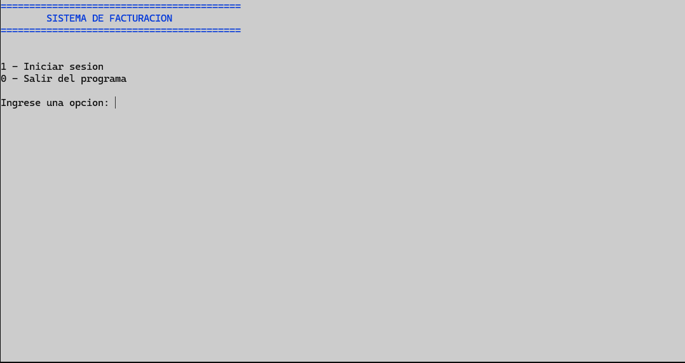
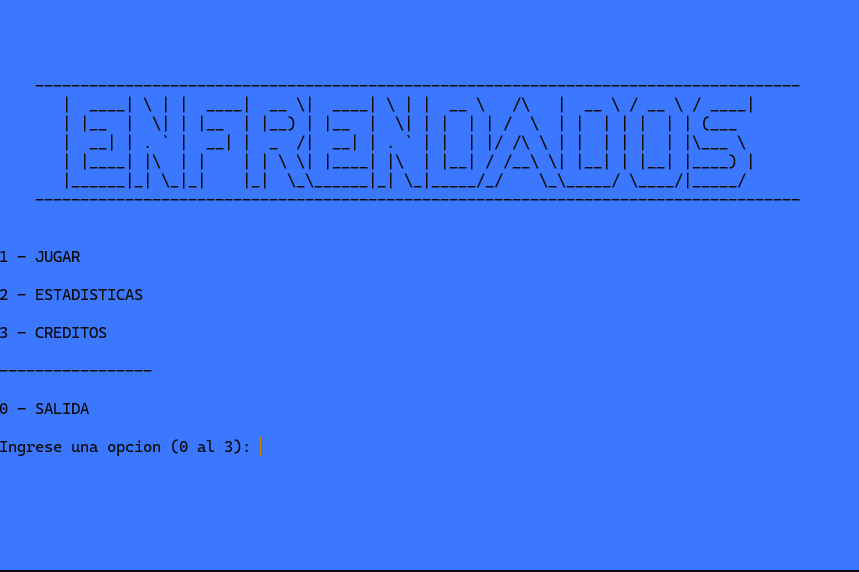
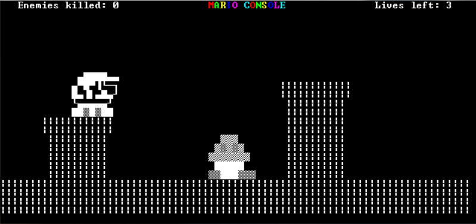

Portfolio personal
Hola, soy Nicolás Bozicek
Desarrollador C#
Desarrollador Front & Backend .NET
Estudiante de programación, dando mis primeros pasos en el mundo de IT.
Nicolás Bozicek · Desarrollador
01 / Perfil
Sobre mí
Soy de Sáenz Peña, provincia del Chaco. Estoy cursando el 2.º año de la Tecnicatura Universitaria en Programación en la UTN Facultad Regional General Pacheco. Además, soy Técnico en Gestión y Administración de las Organizaciones y actualmente trabajo como administrativo en un supermercado.
Experiencia
Administrativo
Cadena de supermercados
2020 — 2026- Ubicación
- Sáenz Peña · Chaco
- Idiomas
- Inglés (básico)
- Educación
- Técnico en Gestión y Administración de las Organizaciones.
Estudiante de la Tecnicatura Universitaria en Programación, UTN FRGP. - Experiencia actual
- Administrativo en una cadena de supermercados
02 / Herramientas
Conocimientos
Desarrollo web
Frameworks
03 / Trabajo seleccionado
Mis proyectos
Prácticas y proyectos desarrollados durante mi formación.

01Aplicación de escritorio · C++
Sistema de Gestión
Desarrollado en C++ como proyecto de gestión.
Ver en GitHub
02
03Juego · C++
Juego inspirado en Mario Bros
Copia de un juego de Mario Bros realizada en C++.
Ver en GitHub04 / En línea